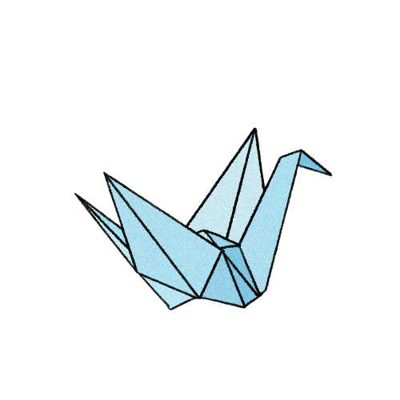

Algumas fotos das minhas criações
.jpg)
.jpg)
.jpg)
.jpg)
Esse foi o dia que eu fui numa oficina de origami no shopping num evento que teve ali:
.jpg)

A arte de criar com as mãos e o papel.
O origami surgiu há séculos, logo após a invenção do papel. Embora tenha raízes na China, foi no Japão que ele se transformou em uma tradição cultural rica, onde cada dobra carrega um significado.
Antigamente, o papel era um item de luxo, por isso o origami era usado principalmente em cerimônias religiosas e presentes formais.
A objetivo principal é representar figuras, animais e objetos utilizando somente dobras no papel. Nos origamis clássicos o artista não utiliza recortes ou colagens para chegar ao resultado final.

Para mim, dobrar papel é um momento de tranquilidade. Gosto de ver como podemos transformar em algo simples como uma folha quadrada em algo complexo apenas com uma sequência de dobras e marcações.
Esse foi o dia que eu fui numa oficina de origami no shopping num evento que teve ali: